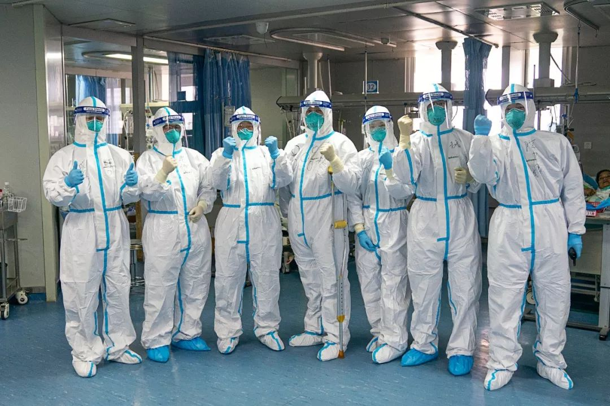
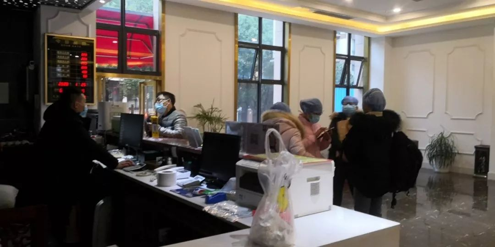
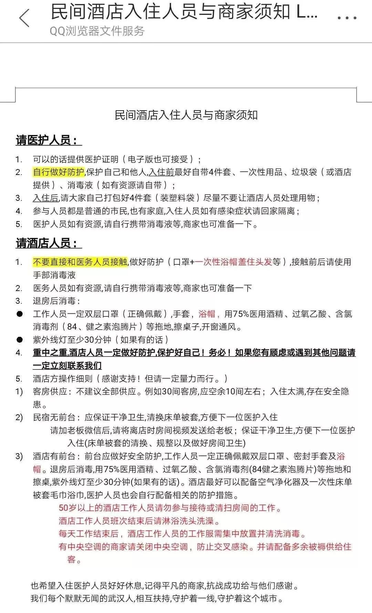
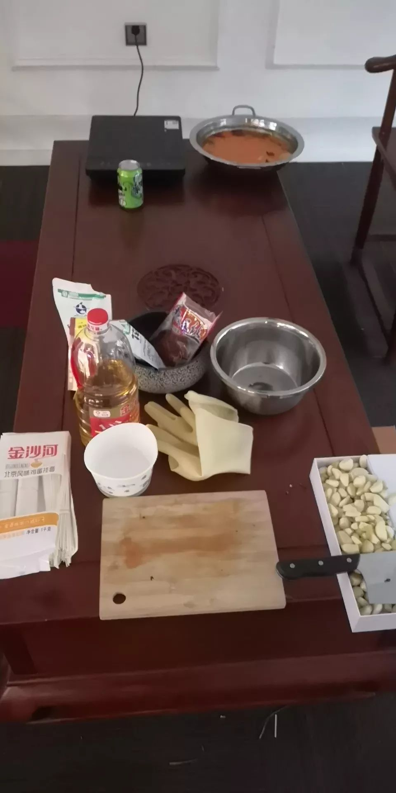

不止有武汉：湖北疫区16城实录 （上篇）
原文链接 备份链接 各方资源和关注的焦点是武汉，但在周边16座也因疫情而被封闭的城市里，他们正在经历着什么 文 |《财经》记者 房宫一柳 宋玮 黎诗韵 管艺雯 陈晶 余洋洋 实习生 马可欣 张凡 编辑 | 宋玮 1月24日，农历鼠年除夕 …
受到武汉新发布限行令的影响，也出于对车主健康的担忧，善缘车队停止接送医护人员。26日上午，在一些武汉本地的互助群里，提供免费住宿或为医生送餐的武汉市民们还在热议：目前我们还没收到通知，是不是还可以自发去接送医生？
本文首发于南方人物周刊
文 | 杨楠 实习记者 何沛芸 聂阳欣
编辑 | 周建平 蒯乐昊
全文约3725字，细读大约需要9分钟

1月24日，在武汉大学中南医院重症隔离病房，医护人员相互加油鼓劲。一场抗击新型肺炎疫情的战役正在进行，医护人员是这场疫情防控战的逆行者 图 / 新华社
交通停摆之后 市民们自发组织车队接送医生上下班

1月25日年初一这天，小熊（化名）手机铃声就没有停过。她手机里有近30个武汉本地的微信群，有的负责对接物资，有的负责接送医生护士，还有的积极为医护工作者提供就近住宿。23日，武汉市暂停市内外公共交通，小熊和朋友自发组织起善缘车队，接送医务人员出行。
除夕这天凌晨1点多，小熊接到一位四十多岁的女医生。医生刚上车就同她不停道谢，说差点以为要回不了十八、九公里外的家。车开了没一会儿，医生说起了医院N95口罩不够，一天看了一百多个病人，许多同事都只能在冬夜里步行回家。“受不了了，压力太大”，女医生突然在后座哭了起来。
一天后，小熊开始发烧、咳嗽。她很警觉，立刻决定先在家休息，自行隔离，不去医院以降低交叉感染的可能性，并希望继续参与车队调度的安排。她发了一条朋友圈，提醒和她接触过的朋友自行隔离。
原本，小熊的2020年春节是这样安排的：和男友旅行，去迪士尼，去泡温泉，然后举行订婚仪式。说到这里小熊也哭了，“今天早上，他（男友）还和我说，早知道就早点帮我完成这些愿望，他害怕到死都没办法再见面。”
家住武昌区的私家车主郭信，也加入了自愿接送医护人员的微信群，按区接人。年三十那天，他接了两个医护，都是顺路。他每接一个人，都会拿出酒精喷雾消毒，把车晾在路边一小时，自己四处走走，再接下一个。
为了减少感染的可能，郭信建议司机们不要承载患者，并要求医护人员出示证件或以其他方式确认身份。“医护人员都是战士，我们是后勤，真的染病了也值。”
可当他路过四干道的居民区，看到一大波人在小区门口等着想打车打不到，心里也难受，“挺不容易的”，他说。
25日深夜，小熊发布告示，受到武汉新发布限行令的影响，也出于对车主健康的担忧，善缘车队停止接送医护人员。武汉从26日起，将对中心城区区域实行机动车管制，交管部门将对禁行的机动车通过短信提前24小时告知车主。目前尚不确定哪些车主会收到短信通知。
26日上午，在一些武汉本地的互助群里，提供免费住宿或为医生送餐的武汉市民们还在热议：目前我们还没收到通知，是不是还可以自发去接送医生？
HIV携带者和尿毒症患者的多事之秋
近三日，湖北省已有14个城市实行“封城”措施，道路交通的阻断为生活带来的困境亟待解决。
有的超市工作人员步行一小时去上班，也有下班步行三小时回家的市民。
突如其来的变故，也可能给生活带来意外的危机。电话采访中，邹俊熙（化名）一直在哭。春节返乡，他回到武汉附近天门市的一个村子里。他是一位HIV病毒携带者，需要每天准时吃药。由于村里突然封路，他担心无法去天门市人民医院取药。他的药还有八天，但如果漏药，HIV病毒可能变异，之后就需要更换三千每月的进口药。
忧心之下，邹俊熙在微博上发布了求助，村里一位工作人员上门了解情况时，将他携带HIV病毒的事告诉了他父母。父母问他为什么会染上这个病。他躲进自己房间哭，不知道如何回答父母，也不知道在村子里，这个消息会不会很快传播开，“我爸妈可能没法抬头了。”他还想和父母说，一起吃饭，一起生活，是不会传染的。
工作人员后来上门同他道歉。天门市人民医院的医护人员主动联系了他，但告诉他，医院无法调整取药方式，因为HIV患者每次取药都需要抽血检验，必须亲自前来。有NGO与省疾控中心协调后，HIV患者可以在当地治疗点领取一个月的药物。
25日下午，武汉六院的尿毒症患者收到通知，因六院被征收为新一批定点诊治新冠肺炎的医院，下周起将不再接受透析患者。
患者和家属手足无措。有的已经去了附近其他的医院，但目前汉口医院的医疗资源十分紧张，鲜有医院有能力接收透析患者。由于限行令，患者家属担忧无法去离家远的医院透析。
家属急得怪医生怪护士，血透室护士长陈明赌咒发誓她也是突然知道情况。她说，“我很难过！很难过！但你们能不能等一等，我们跑一跑。”
她和血透室的其他同事去跑，去争取，25日晚上8点时告诉大家：“（27日）星期一暂时（还可以）透析，等待转诊医院！”过了一会儿她又在微信群里说了三次，“来透析来透析来透析。”
“来透析”这三个字就像是一场春雨。半小时后，血透室主任告诉患者们，“院长帮大家争取了一段缓冲期，他还在继续争取。我们会尽最大努力帮助大家。”
患者们道谢，祝福医生护士。之前剑拔弩张，突然和平，医生说：“我们还是一家人。”

一家空杯连锁酒店被69位医护人员预定了房间，老板陶磊给他们办理了可用十天的房卡
武汉超百家酒店为医生免费提供就近住宿
大家都知道一切会好起来，可这一时期的艰难是实实在在的，必须咬牙共渡。
因为公共交通停摆，出诊时间长，不少家比较远的医生需要解决就近住宿问题。目前武汉有超过百家酒店主动为医护人员免费提供住宿，希望在市内交通停摆的日子里，奋战在一线的医护人员就近有个休息的地方。

一支援群总结的酒店入住需知
分别给医护人员和酒店人员详细写了建议
他们的联络群里常有这样的信息，“肺科医院医护人员九名，几天没有回家休息，现在还在医院，希望有附近酒店可以尽快入住休息。”或是，“武昌医院的军医，需要盒饭，谁有资源提供下。谢谢！”
大年初一的下午3点，辛德拉公寓酒店刚刚腾出的25个房间，立刻被武汉市第四医院刚上完夜班的医护人员住满。她们自带床单、被罩、牙刷、毛巾等生活用品和消毒液。
春节期间，酒店只留下了一位清洁阿姨。医护人员提出可以自己打扫，但阿姨不答应。“他们走了以后我们自己消毒，没问题。”阿姨在附近的超市买了面包和方便面，备好了自己过年的一日三餐。
特殊时期，所有科室都要上一线。武汉市第三医院耳鼻喉科的张潇（化名）从年三十早上8点开始，值班了24个小时。在几小时的休息间歇里，科室给她准备了泡面、牛奶和面包。她选择在医院附近住下，等待通知，随时准备顶上。“关键时刻，不分科室，一方有难，八方支援，才能更快渡过难关。”
这实在地帮助到了一线的医护人员。一家空杯连锁酒店被69位医护人员预定了房间，其中多数为武汉市第三人民医院的医护人员。老板陶磊给他们办理了可用十天的房卡，还在酒店大厅放置了面条、调料和简易的电磁炉灶台。酒店内消毒液足够，但医用防护口罩紧缺，陶磊买了99元40个的简易口罩，自己开车给店内工作人员派送，让他们一次戴两个。

医用防护口罩紧缺，陶磊买了99元40个的简易口罩，自己开车给店内工作人员派送，让他们一次戴两个
武汉北岛酒店公寓发布信息当晚，已有七位中南医院的医护人员联系入住。而武汉袋鼠公寓在25日中午12点十间房间全部订满，其中八间被刚值完夜班的医生入住。Keivin公寓&民宿25日将11间房间安排给医护人员，交予他们民宿的管理员密码，没有规定退房时间。
但依然有店主表示担忧。汉福林酒店的运营者担心，如果因为接待医护人员，造成了酒店员工感染，作为雇主，民营企业可能承担不起这个责任。
多数酒店在尽可能做好一系列防护措施，避免医护人员间交叉感染，也保证酒店工作人员的健康。其中包括店内工作人员戴口罩戴浴帽，退房后消毒，清洁后洗澡等等。

酒店在大厅放置了面条、调料和简易的电磁炉灶台
国家救援物资正陆续抵达武汉
对小熊来说，大年初一最好的消息莫过于她在朋友圈看到的一张照片：几辆货车疾驰在空无一人的大桥上。
“国家的救援物资终于到了武汉，要哭了。（希望）不用一个口罩戴一天了，也不用冒着生命危险上岗了。一线的工作人员一定要保护好自己，武汉人民谢谢过年还专门回来救援的所有医院工作者。”她在朋友圈写道。
从26日起，阿里巴巴将每日免费为武汉红十字会医院、武汉第六医院提供早中晚三餐300份，为武昌区21家医疗单位每天供应饮用水、方便面、自热食品等物资3144份。天猫超市和盒马鲜生超市不停业、不涨价，滚动上架口罩、消毒液等防护用品。饿了么外卖不停，配送费不涨。
虽然26日凌晨1点，来自上海的对口支援医疗队，尚在询问哪里可以购买每日三餐：“从上海来的支援医生连物资都自带了，但是没想到到了当地医院，连饭都吃不上。现在还在开会，明天就要进驻疫情最严重的汉口医院，但早饭都还没有着落。”随即有人在微信群里提出帮忙对接外卖平台。
“现实就是这样，我们等着情况慢慢好起来。”一位求助人说。

征集疫区真实故事，记录我们的命运
《南方人物周刊》现面向所有新冠肺炎一线的读者征稿，写下你正在经历或亲眼所见的故事。如果你是一线医护人员或其家属，疫区公共服务人员，病患本人或家属，专业人士等等，如果你有故事、有困难、有建言，请让我们知道。我们也同时征集采访对象和新闻线索，留下你的联系方式，我们的记者会同您联系。我们会充分保护受访者的隐私。
隔离疫情，但不隔离爱。写出你的真实故事，你的困境和希望，记录我们共同的命运，围城内外携手共度。
此次征稿形式不限：文字（2000字左右）、图片（原创拍摄）、音频视频（原创录制）
祝愿所有在疫区和不在疫区的朋友们，新春快乐，平安健康。
投稿方式：
1、记者热线（同微信）：13918532564、13631483936
2、《南方人物周刊》微信公号投稿邮箱：wuhantingzhu@126.com
3、《南方人物周刊》官方微博讨论话题：#我在疫区有话说#
注：请务必保证投稿内容的真实、客观、理性，不造谣，不传谣。
原文链接 备份链接 各方资源和关注的焦点是武汉，但在周边16座也因疫情而被封闭的城市里，他们正在经历着什么 文 |《财经》记者 房宫一柳 宋玮 黎诗韵 管艺雯 陈晶 余洋洋 实习生 马可欣 张凡 编辑 | 宋玮 1月24日，农历鼠年除夕 …
原文链接 备份链接 武汉第一批七家定点医院医用物资也存在短缺 防疫物资今日抵达汉口，明日有望缓解 本文首发于南方人物周刊 文 | 本刊记者 徐梅 赵蕾 张宇欣 编辑 | 周建平 蒯乐昊 全文约3479字，细读大约需要9分钟 有的市属一 …
原文链接 备份链接 1月25日，是中国鼠年的第一天，也是武汉封城的第3天。非常时期，武汉成了全国人民挂念、祈福的城市。封城后，武汉人民的真实生活是什么样？正和岛自今日起特别推出《叶青：我在武汉疫区的第N天》专栏。叶青是一位定居武汉40年的 …
原文链接 备份链接 按规定，他们每接一次病人，都要全车消毒、销毁防护服，不然可能会成为新的传染源。但现实情况是，他们全站连一套防护服都没了。除夕夜里两点，他没有睡觉，发了这半年里唯一一条不是关于女儿的朋友圈，是一条物资的求助。他告诉《人 …
原文链接 备份链接 近日，因新型冠状病毒肺炎疫情，湖北武汉封城，全市公共交通停运，医护人员上下班成难事。除民间司机团队自发组织接送外，除夕傍晚，武汉多家当地酒店自发组织，为医护人员就近提供免费住宿。 文 | 刘田 编辑 | 沈小山 近 …